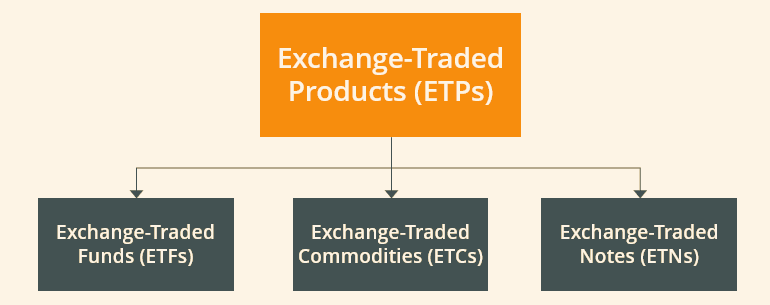

ETFs: A Beginner-Friendly Investment Option
For beginner investors, understanding the different ways to grow your money can be confusing. One investment option that has gained popularity is the Exchange-Traded Fund (ETF). ETFs combine features of both stocks and mutual funds, making them a flexible and accessible choice for new investors.
What is an ETF?
An ETF is a type of investment fund that holds a collection of assets like stocks, bonds, or commodities. Unlike mutual funds, ETFs are traded on stock exchanges, which means you can buy or sell them throughout the trading day just like a stock. The price of an ETF changes continuously based on market demand.
Example: Imagine an ETF that tracks the S&P 500. When you buy one share, you effectively own a tiny portion of all 500 companies in the index. If the index rises 5% over a year, the value of your ETF shares also increases by roughly the same amount.
Benefits of ETFs for Beginners
- Low Cost: ETFs typically have lower expense ratios compared to actively managed mutual funds.
- Diversification: One ETF can provide exposure to dozens or hundreds of stocks or bonds.
- Liquidity: ETFs can be traded anytime the stock market is open, unlike mutual funds that settle once per day.
- Transparency: ETFs disclose their holdings daily, so you always know what you own.
ETFs vs. Mutual Funds
ETFs and mutual funds are similar in that they both pool money from multiple investors to invest in a diversified portfolio. However, there are key differences:
- Trading: ETFs trade like stocks throughout the day; mutual funds are priced only once per day.
- Costs: ETFs often have lower fees due to passive management; mutual funds may charge higher fees if actively managed.
- Minimum Investment: Many mutual funds require a minimum initial investment, while ETFs can be purchased in single shares.
- Flexibility: ETFs allow intraday buying and selling, limit orders, and stop-loss strategies, unlike mutual funds.
ETFs vs. Stocks
ETFs differ from individual stocks in that each share represents a portion of a diversified portfolio rather than a single company. This reduces the risk of investing in just one stock. While stocks can offer higher returns, they are more volatile, whereas ETFs provide a balance between growth and safety.
Example: Buying shares of Apple exposes you only to Apple’s performance. Buying an S&P 500 ETF spreads your investment across 500 companies, reducing the impact if one company underperforms.
Types of ETFs
- Stock ETFs: Track an index of stocks, like the S&P 500 or tech sector.
- Bond ETFs: Focus on government or corporate bonds, providing steady income.
- Sector & Industry ETFs: Target specific sectors, such as healthcare or technology.
- Commodity ETFs: Track commodities like gold, silver, or oil.
- International ETFs: Invest in foreign markets for geographic diversification.
How to Start Investing in ETFs
- Decide your investment goal: long-term growth, retirement, or short-term savings.
- Determine your risk tolerance: conservative, moderate, or aggressive.
- Choose ETFs that match your goals: index ETFs, sector ETFs, or bond ETFs.
- Open a brokerage account that allows ETF trading.
- Start small and gradually increase your investment as you gain confidence.
- Monitor your ETFs occasionally, but focus on long-term growth instead of daily fluctuations.
Tips for Beginner ETF Investors
- Consider low-cost index ETFs for broad market exposure.
- Diversify across asset classes and sectors.
- Reinvest dividends to take advantage of compounding.
- Don’t try to time the market—consistent investing works best over time.
- Keep an eye on fees and expense ratios.
Summary
ETFs offer an easy, flexible, and affordable way for beginners to invest in a diversified portfolio. By combining the benefits of mutual funds and the flexibility of stocks, ETFs allow you to grow your wealth while managing risk. Start small, choose ETFs that align with your goals, and stay consistent to see steady long-term growth.
👉 Remember: ETFs make investing simple, accessible, and beginner-friendly—perfect for building your financial future.